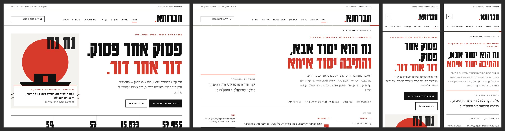
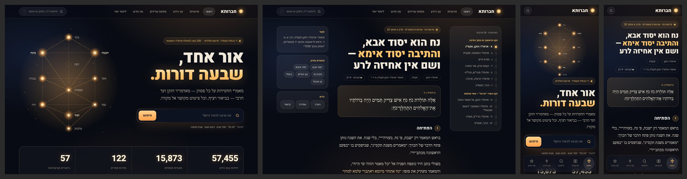
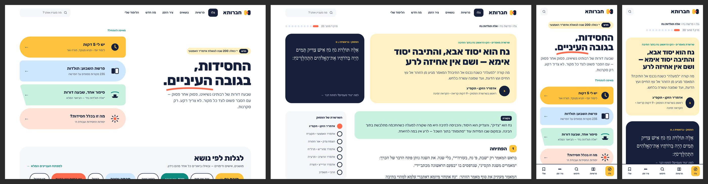

דוגמאות סטטיות בלבד; האתר החי לא שונה. בכל כיוון: דף הבית ועמוד ביאור, במובייל ובמחשב.
טיפוגרפיה עברית גדולה ונועזת בסגנון מגזין תרבות, הרבה אוויר, רשת חזקה וצבע מוביל אחד — אדום־כתום.
דף הביתעמוד ביאור
מצב כהה עם אור זהוב חם, עץ ספירות מונפש כמוטיב, שכבות זכוכית ותנועות עדינות.
דף הביתעמוד ביאור
בהיר וצבעוני, ידידותי למתחילים: ״מאיפה להתחיל״, נושאים כצ׳יפים, ציר זמן, שערים בצורת קשתות והסבר פשוט לצד המקור.
דף הביתעמוד ביאור